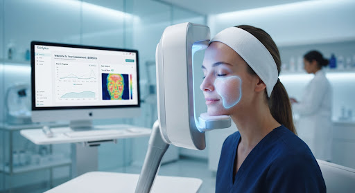

Skinlytics
Introduction
START
Hi Aarav — let's understand your skin.
Your personalized clinical-grade analysis begins with a comprehensive look at your unique biology and environment.
clinical_notes
Assessment Plan
We use a 5-step protocol taking approximately 3 minutes. Our AI cross-references visual markers with your daily habits for maximum accuracy.
face
Skin Micro-Texture
Visual analysis of pore size, hydration levels, and elasticity.
bedtime
Lifestyle & Sleep
Evaluating recovery cycles and hormonal impact on barrier health.
thermostat
Environmental Stress
Local UV index, humidity, and pollution mapping for your location.

camping
AI ENGINE ACTIVE
verified_user
HIPAA Compliant Privacy
photo_camera
Photo consent required for analysis